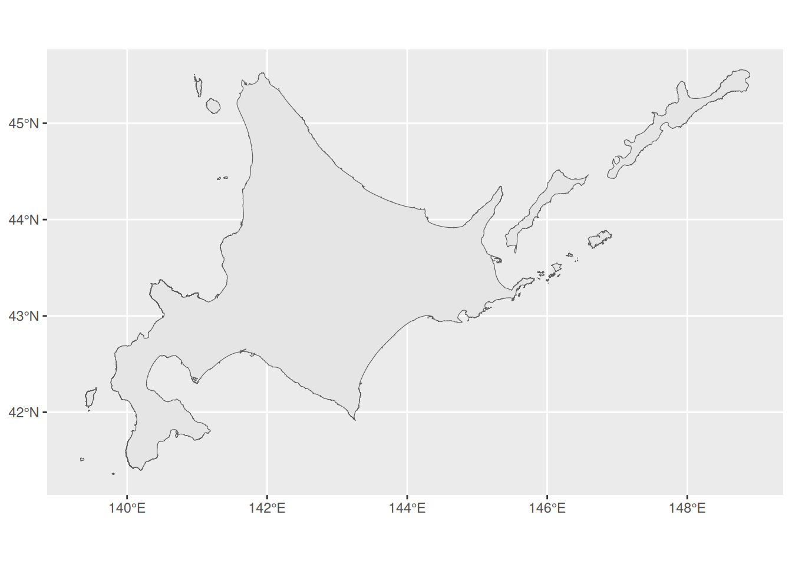
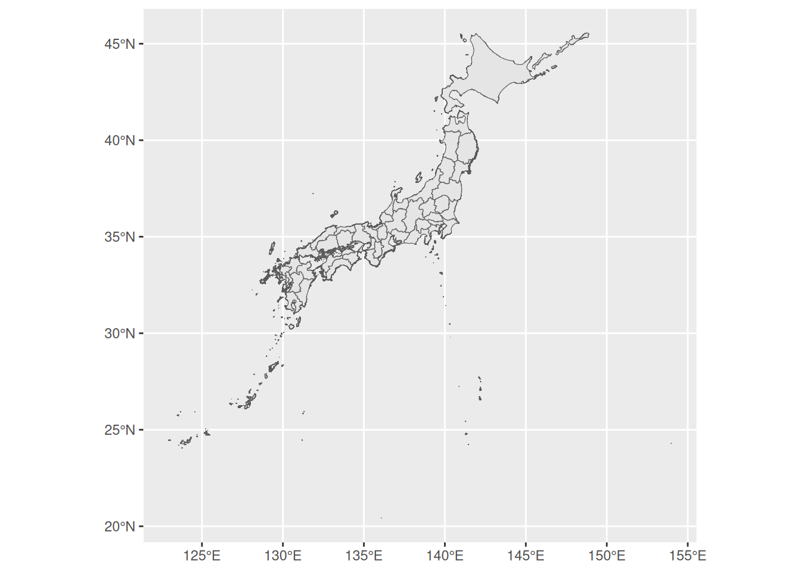
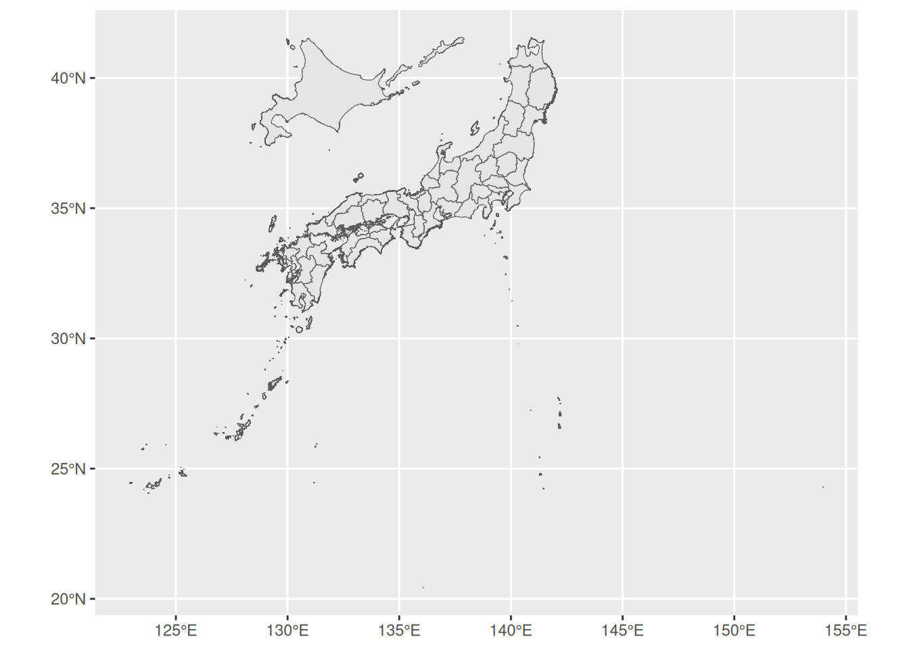
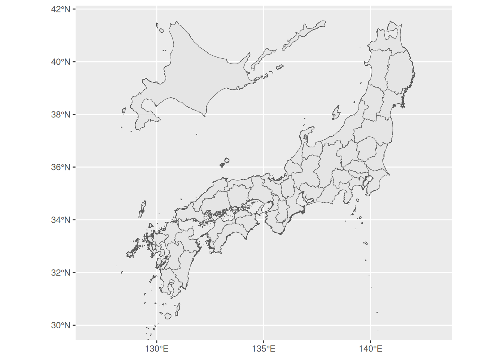
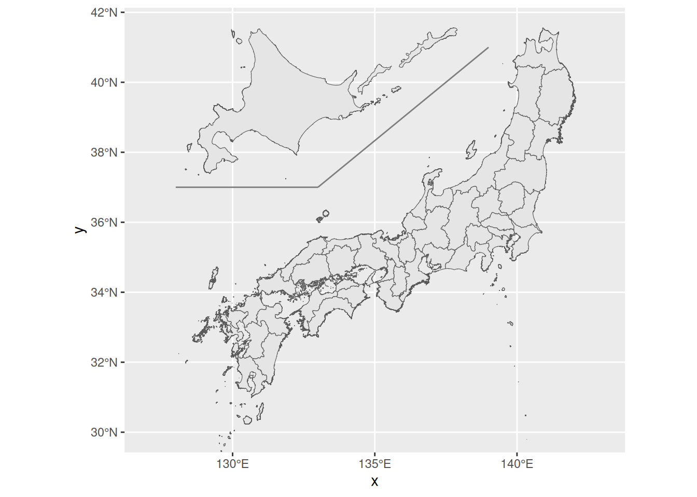
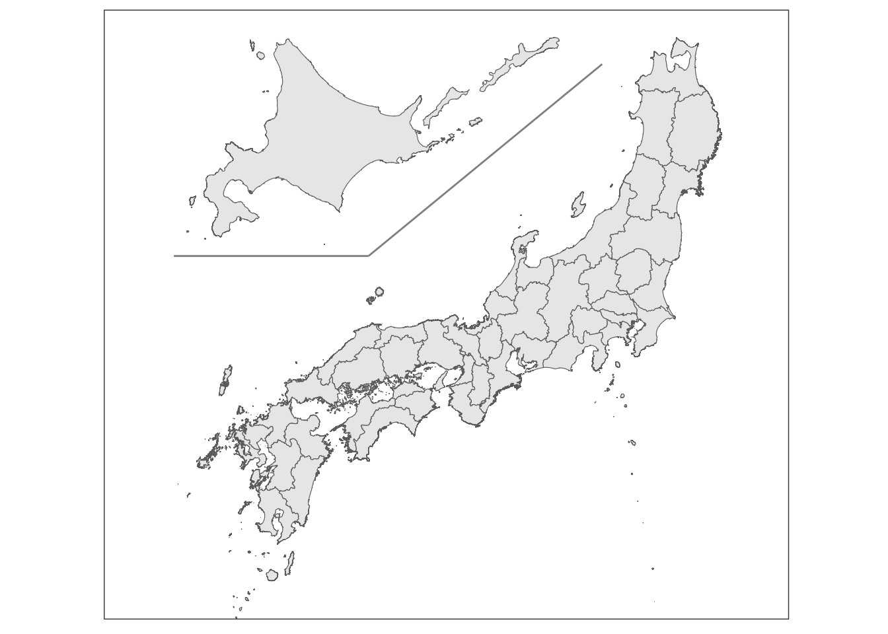

library(tidyverse)
library(sf)
# GISデータを保存しているフォルダ
data_dir <- here::here("data/jpn_geojson")
pref <- read_sf(file.path(data_dir, "prefecture.geojson")) |>
st_transform(st_crs(6668))はじめに
今回は地図を調整する方法を説明します。ここでいう調整というのは、日本地図で北海道を本州の左側に、沖縄を東に配置するというようなことを指します。
図を挿入するスペースが限られており、通常の形で挿入すると地図が小さくなってしまうような場合に役立ちます。
今回使用するデータは国土数値情報ダウンロードサイトの行政区域データから取得しています。
https://nlftp.mlit.go.jp/ksj/gml/datalist/KsjTmplt-N03-2024.html
ファイル・データの読み込み
今回は都道府県のマップを使用します（ダウンロードした後にファイル名を変えています）。
平面にマッピングするのにCRSを6668に設定するとバランスが良いと感じるので、ついでに設定しています。
今回は説明を簡単にするため、北海道のみを例にとって説明します。
データの整理
今回の目標は北海道を本州の西側に配置することです。
プロットに先立ち、データを北海道とそれ以外に分割する必要があります。
pref_no_hokkaido <- pref |>
filter(N03_001 != "北海道")
hokkaido <- pref |>
filter(N03_001 == "北海道")N03_001に都道府県名が格納されています。
試しに北海道だけプロットしてみると、
ggplot(hokkaido) +
geom_sf()

このように北海道のみが抽出できています。
北海道の移動
次に北海道を移動させます。
先に日本全体をマッピングしておくと、どの程度移動させるべきかイメージが付きやすいと思います。
ggplot(pref) +
geom_sf()

これを見ると、北海道を西に11度、南に4度くらい動かせばよいのではないかなと思います。ちなみに動かす単位は緯度経度です。
それでは先ほどのhokkaidoデータのgeometryを西と南にそれぞれ動かしていきます。
hokkaido <- hokkaido |>
mutate(geometry = geometry + c(-11, -4)) |>
st_set_crs(st_crs(pref))ポイント：
geometryを上書きgeometryにc(-11, -4)のようにc(x, y)を加えることで動かすことができます。- 設定しているCRSによって動く幅が異なるので、そこは調節してください。
- CRSを設定
geometryを上書きするとマッピングの際に必要なCRSが失われますので、再度設定が必要です。st_set_crs()で設定できます。st_crs(pref)でprefと同じCRSを設定することが可能です。直接6668を設定することも可能です。st_crs()で設定されているCRSを確認できます。
プロット
ベース
では、これをpref_no_hokkaidoと併せてプロットしてみましょう。
ggplot() +
geom_sf(data = pref_no_hokkaido) +
geom_sf(data = hokkaido)

いい感じですね。必要に応じて表示する範囲を絞りましょう。今回は東経127度から143度、北緯30度から上は自動調節にしましょう（外れた範囲の地域の方、申し訳ございません…）。
ggplot() +
geom_sf(data = pref_no_hokkaido) +
geom_sf(data = hokkaido) +
xlim(127, 143) +
ylim(30, NA)

うまい具合に絞ることができました。
xlimとylimで調節ができます。上限や下限を特に指定しない場合はNAを設定すればよいです。
セグメントの追加
北海道と本州の間に線を引いて、区切りを入れていきます。
ggplot() +
geom_sf(data = pref_no_hokkaido) +
geom_sf(data = hokkaido) +
xlim(127, 143) +
ylim(30, NA) +
annotate("segment", x = 128, xend = 133,
y = 37, color = "gray50") +
annotate("segment", x = 133, xend = 139,
y = 37, yend = 41, color = "gray50")

annotate("segment", ...)で線を追加できます。Xの開始点と終点、Yの開始点と終点をそれぞれ指定することができます。終点の方を指定しなければ、垂直線あるいは水平線になります。2本の線をつなげたい場合は、1本の終点が2本目の開始点になるように調節してください。
annotate()については以下のページもご覧ください。
調整
最後に図の調整を行います。ここでは地図のテーマを変えたり、軸ラベルを消したりします。
ggplot() +
geom_sf(data = pref_no_hokkaido) +
geom_sf(data = hokkaido) +
xlim(127, 143) +
ylim(30, NA) +
annotate("segment", x = 128, xend = 133,
y = 37, color = "gray50") +
annotate("segment", x = 133, xend = 139,
y = 37, yend = 41, color = "gray50") +
labs(x = NULL, y = NULL) +
theme_bw() +
theme(
axis.text = element_blank(),
axis.ticks = element_blank(),
panel.grid = element_blank()
)

ポイント：
labs(x = NULL, y = NULL)で各軸のラベルを消去theme_bw()で白黒テーマの適用theme()axis.textで軸のテキスト（今回は緯度経度）を消去axis.ticksで軸の目盛りを消去panel.gridで図内の罫線を消去element_blank()は要素を消去する関数
これである程度きれいなプロットができました。
もし地図の塗りつぶしの色を変えたければ、geom_sf()内でfill = "white"などを追加すれば変更することができます。